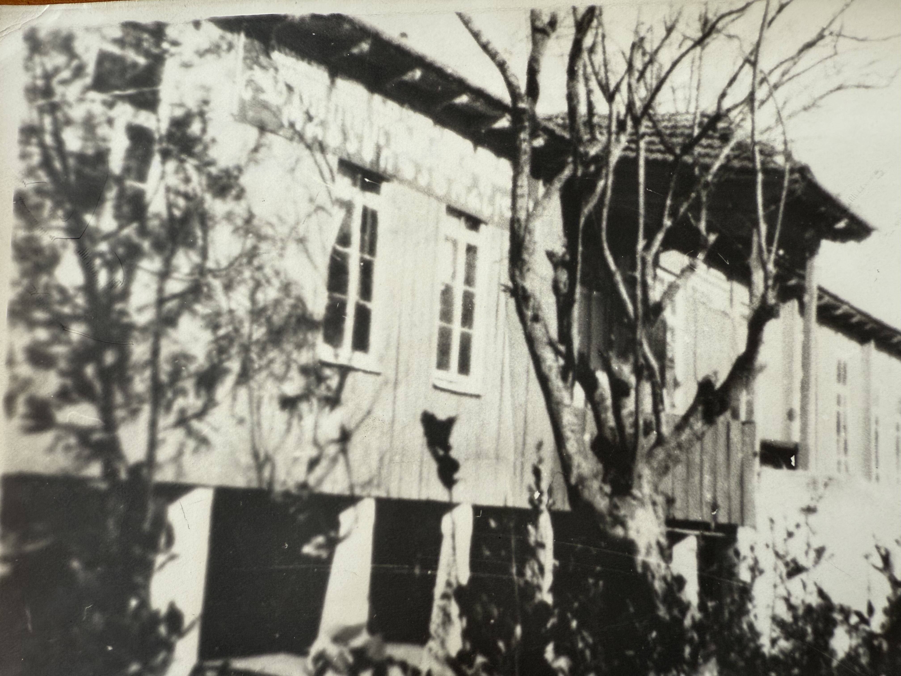
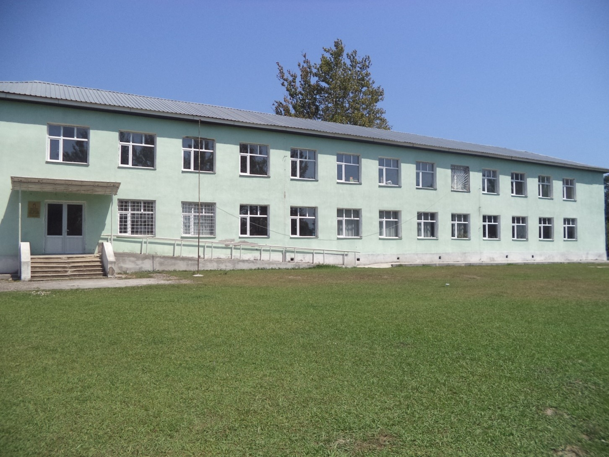
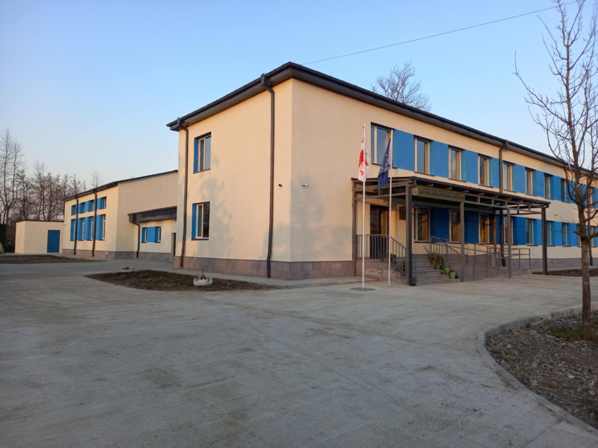

ჩვენს შესახებ > ისტორია
სკოლის ისტორია
სკოლის გზა წარსულიდან დღემდე

1922-1979 წლები: ისტორიის დასაწყისი
ჩვენს სკოლას საუკუნოვანი ისტორია აქვს. მან ფუნქციონირება 1922 წელს, დაწყებითი სკოლის სტატუსით დაიწყო. თავდაპირველად, საკუთარი შენობის არქონის გამო, სასწავლო პროცესი ნოღოხაშში მცხოვრები გიორგი ძნელაძის სახლში მიმდინარეობდა. 1935 წელს იგი შვიდწლიან სკოლად გადაკეთდა და ახლად აშენებულ ხის შენობაში განთავსდა (დირექტორი: ილარიონ ჯოჯუა). 40-იანი წლებისთვის სკოლა მოსწავლეთა სიმრავლით გამოირჩეოდა, სწავლა ორ ცვლაში მიმდინარეობდა და ისწავლებოდა მრავალფეროვანი დისციპლინები — ასტრონომიითა და გეომეტრიით დაწყებული, სუფთა წერითა და ხაზვით დასრულებული.

1979-2024 წლები: განვითარება და ტრადიციები
1979 წელს, მაშინდელი დირექტორის, ჟუჟუნა არჩაიას თაოსნობით, ძველი ხის შენობის ნაცვლად აშენდა 192 მოსწავლეზე გათვლილი კაპიტალური ორსართულიანი სკოლა დიდი სპორტული დარბაზით. ათწლეულების განმავლობაში სკოლას ხელმძღვანელობდა არაერთი ღირსეული დირექტორი, ხოლო 2019 წლიდან სკოლის დირექტორია ქალბატონი ასმათ აბულაძე.
ნოღოხაშის საჯარო სკოლა ყოველთვის ამაყობდა თავისი პედაგოგებითა და კურსდამთავრებულებით. დღეს აქ წარმატებით ასწავლიან საქართველოს დამსახურებული მასწავლებელი დარეჯან ცომაია (რომელიც დედის, ციალა ღვინჯილიას გზას აგრძელებს) და მრავალწლიანი გამოცდილების მქონე პროფესიონალები: მალინა გაბელაია, თამთა ძველაია, ირმა გვაზავა და ბელა კუჭუხიძე.
ჩვენი სკოლის კედლებში აღიზარდა არაერთი საამაყო პიროვნება:
- გიგა გაბელია — აბაშის მუნიციპალიტეტის მერი;
- აკაკი და ვაჟა გაბელიები — პროფესორები, წარმატებული მეცნიერები;
- ზვიად გაბელია — წარმატებული ოთორინოლარინგოლოგი;
- დოდო გაბელია, დები ბოკუჩავები და ჭანჭავები — წარმატებული პედაგოგები და განათლების სფეროს მოღვაწეები.

2024 წლიდან დღემდე: თანამედროვე სტანდარტები
საქართველოს პრემიერ-მინისტრის სკოლების სრული რეაბილიტაციის პროგრამის ფარგლებში, სკოლას ჩაუტარდა სრული რეაბილიტაცია თანამედროვე სტანდარტების შესაბამისად. დღეს იგი აღჭურვილია უახლესი სასწავლო რესურსებითა და ტექნოლოგიებით.
ნოღოხაშის საჯარო სკოლა კვლავაც ღირსეულად პასუხობს თანამედროვე გამოწვევებს და აგრძელებს მომავალი თაობების აღზრდის საპატიო საქმეს.
პატივისცემით,
სსიპ ქალაქ აბაშის ნოღოხაშის საჯარო სკოლის დირექტორი, ასმათ აბულაძე